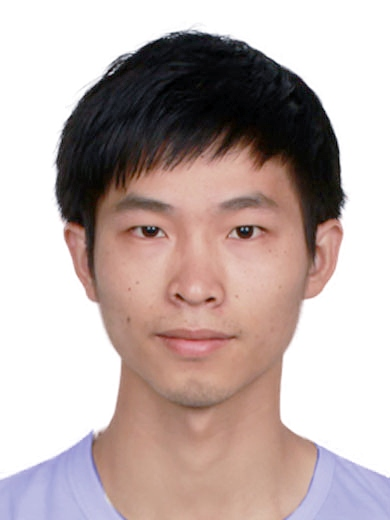
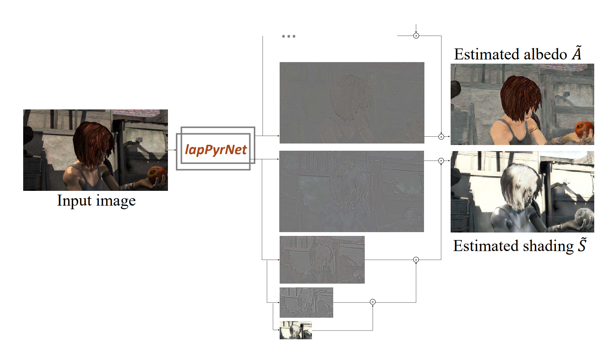

|
Department of Computer Science Zhejiang University E-mail / Github |
 |
Lechao Cheng received Ph.D degree from Zhejiang University, supervised by Prof. Zhangye Wang and Prof. Wei Chen. His research area centres around Computational Photography, Knowledage Distillation, Few-shot Learning and Fine-grained Image Classification. He serves as a technical program committee (TPC) member for ACM Multimedia 2020,2021, and reviewer for Neurocomputing, ACM Multimedia 2020, CVPR2021,ICCV2021,ACM MM2021.
|  |
Intrinsic Image Transformation Via Scale Space Decomposition
Lechao Cheng, Chengyi Zhang, Zicheng Liao. IEEE Conference on Computer Vision and Pattern Recognition (CVPR), 2018. |

|
Boundary Knowledge Translation based Reference Semantic Segmentation
Lechao Cheng*,Zunlei Feng*,Xinchao Wang,Yajie Liu,Jie Lei,Mingli Song The 30th International Joint Conference on Artificial Intelligence(IJCAI), 2021. |
|
Learning Optimal Power Flow with Infeasibility Awareness,
Gang Huang, Longfei Liao, Lechao Cheng, Wei Hua Climate Change AI workshop at ICML 2021(ICML 2021 workshop), 2021. |
|
Boundary Knowledge Translation based Reference Semantic Segmentation,
Lechao Cheng*,Zunlei Feng*,Xinchao Wang,Yajie Liu,Jie Lei,Mingli Song The 30th International Joint Conference on Artificial Intelligence(IJCAI), 2021. |
|
Visual Boundary Knowledge Translation for Foreground Segmentation,
Zunlei Feng*,Lechao Cheng*,Xinchao Wang,Xiang Wang,Yajie Liu,Xiangtong Du,Mingli Song Thirty-Fifth AAAI Conference on Artificial Intelligence(AAAI), 2021. |
|
Edge-competing Pathological Liver Vessel Segmentation with Limited Labels,
Zunlei Feng, Zhonghua Wang, Xinchao Wang, Xiuming Zhang,Lechao Cheng,Yuexuan Wang,Mingli Song Thirty-Fifth AAAI Conference on Artificial Intelligence(AAAI), 2021. |
|
Facial Image Inpainting via Variational Autoencoder,
Xuefei Zhang,Lechao Cheng,Shengli Bai,Fan Zhang,Nongliang Sun,Zhangye Wang Journal of Computer-Aided Design & Computer Graphics , 2020. |
|
A Synthesis-By-Analysis Network with Applications in Image Super-Resolution,
Lechao Cheng, Zhangye Wang Proceedings of Computer Graphics International Conference , 2019. |
|
Exploiting Non-Local Relationships For Dense Video Captioning,
Lechao Cheng, Xiaowei Zhao,Zicheng Liao,Yang Liu Proceedings of the British Machine Vision Conference , 2018. |
|
Intrinsic Image Transformation via Scale Space Decomposition,
Lechao Cheng, Chengyi Zhang, Zicheng Liao IEEE Conference on Computer Vision and Pattern Recognition, 2018. |
|
Synthesizing the Four Seasons of a Scene from Large-Scale Web Images,
Lechao Cheng, Zicheng Liao, Zhangye Wang Journal of Computer-Aided Design & Computer Graphics, 2017. |
|
AudeoSynth:Music-Driven Video Montage,
Zicheng Liao, Yizhou Yu, Bingcheng Gong, Lechao Cheng ACM Trans. Graphics(SIGGRAPH), 2015. |